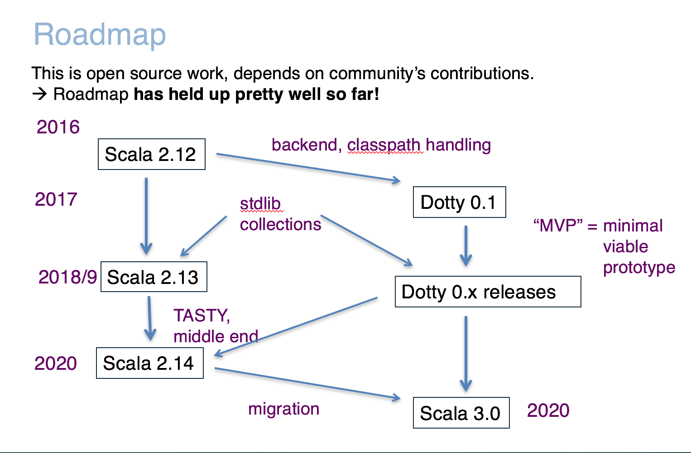

class: center, middle # New Functional Constructs in Scala 3 Martin Odersky Lightbend & EPFL Scale By the Bay 2019  ---  --- # Next Steps 2019: Feature Freeze 2020: 2.14 & 3.0 Releases --- # Why Scala 3? --- # Enumerations What are they? ``` enum Color { case Red, Green, Blue } ``` Usage: ```scala scala> val red = Color.Red val red: Color = Red scala> red.enumTag val res0: Int = 0 ``` --- # Fleshing out enums You can add your own definitions to an enum. Example: ```scala enum Planet(mass: Double, radius: Double) { private final val G = 6.67300E-11 def surfaceGravity = G * mass / (radius * radius) def surfaceWeight(otherMass: Double) = otherMass * surfaceGravity case MERCURY extends Planet(3.303e+23, 2.4397e6) case VENUS extends Planet(4.869e+24, 6.0518e6) case EARTH extends Planet(5.976e+24, 6.37814e6) case MARS extends Planet(6.421e+23, 3.3972e6) case JUPITER extends Planet(1.9e+27, 7.1492e7) case SATURN extends Planet(5.688e+26, 6.0268e7) case URANUS extends Planet(8.686e+25, 2.5559e7) case NEPTUNE extends Planet(1.024e+26, 2.4746e7) } ``` --- # Java Interop An enum's that extend `java.lang.Enum` will translate into regular Java enums. The compiler will check that they conform to the necessary restrictions. ```scala enum Planet(mass: Double, radius: Double) extends java.lang.Enum { ... } ``` --- # Companion Objects enums can have companion objects: ``` object Planet { def main(args: Array[String]) = { val earthWeight = args(0).toDouble val mass = earthWeight/EARTH.surfaceGravity for (p <- enumValues) println(s"Your weight on $p is ${p.surfaceWeight(mass)}") } } ``` --- # ADTs The `enum` concept is general enough to also support algebraic data types (ADTs) and their generalized version (GADTs). ```scala enum Option[+T] { case Some(x: T) case None } ``` --- # ADTs The `enum` concept is general enough to also support algebraic data types (ADTs) and their generalized version (GADTs). Fleshed out version with additional methods and companion object: ````scala enum Option[+T] { case Some(x: T) case None def isDefined: Boolean = this match { case None => false case some => true } } object Option { def apply[T >: Null](x: T): Option[T] = if (x == null) None else Some(x) } ``` --- # Enum/ADT Hybrids One can combine the features of an enum and an ADT in one type: ```scala enum Color(val rgb: Int) { case Red extends Color(0xFF0000) case Green extends Color(0x00FF00) case Blue extends Color(0x0000FF) case Mix(mix: Int) extends Color(mix) } ``` --- # Implicit Function Types An implicit function type describes functions with implicit parameters. Example: ``` type Contextual[T] = implicit Context => T ``` Values of implicit function types work like methods with implicit parameters: ``` implicit val ctx: Context = ... def f(x: Int): Contextual[Int] = ... f(2) // is expanded to f(2)(ctx) ``` --- # Implicit Function Types Conversely, expressions with an expected implicit function type are converted to implicit closures: ``` def cv(implicit ctx: Context): Int = ... def f(x: Contextual[Int]) = { implicit val ctx: Context = ... f } f(cv) ``` expands to ``` def f(x: Contextual[Int]) = { implicit val ctx: Context = ... f(ctx) } f(implicit ctx => cv(ctx)) ``` --- # Implicit Function Types Conversely, expressions with an expected implicit function type are converted to implicit closures: ``` def cv(implicit ctx: Context): Int = ... def f(x: Contextual[Int]) = { implicit val ctx: Context = ... f } f(cv) ``` expands to ``` def f(x: Contextual[Int]) = { implicit val ctx: Context = ... f } f(cv) ``` --- # Example: Conference Management System Using regular implicits: ``` case class Person(name: String) case class Paper(title: String, authors: List[Person], body: String) class Viewers(val persons: Set[Person]) class ConfManagement(papers: List[Paper], realScore: Map[Paper, Int]) { private def hasConflict(ps1: Set[Person], ps2: Iterable[Person]) = ps2.exists(ps1 contains _) def viewers(implicit vs: Viewers): Set[Person] = vs.persons def score(paper: Paper)(implicit vs: Viewers): Int = if (hasConflict(viewers, paper.authors)) -100 else realScore(paper) def viewRankings(implicit vs: Viewers): List[Paper] = papers.sortBy(score(_)) def delegate[T](query: Viewers => T, p: Person)(implicit vs: Viewers): T = query(new Viewers(viewers + p)) } ``` --- # Example: Conference Management System Using implicit function types: ``` case class Person(name: String) case class Paper(title: String, authors: List[Person], body: String) class Viewers(val persons: Set[Person]) class ConfManagement(papers: List[Paper], realScore: Map[Paper, Int]) { type Viewable[T] = implicit Viewers => T private def hasConflict(ps1: Set[Person], ps2: Iterable[Person]) = ps2.exists(ps1 contains _) def viewers: Viewable[Set[Person]] = vs.persons def score(paper: Paper)(implicit vs: Viewers): Int = if (hasConflict(viewers, paper.authors)) -100 else realScore(paper) def viewRankings: Viewable[List[Paper]] = papers.sortBy(score(_)) def delegate[T](query: Viewers => T, p: Person): Viewable[T] = query(new Viewers(viewers + p)) } ``` --- # Bonus Application: Builder Pattern Task: Define methods `table`, `row`, and `cell` to be used as follows: ``` table { row { cell("top left") cell("top right") } row { cell("bottom left") cell("bottom right") } } ``` --- # Bonus Application: Builder Pattern They should produce instances of the classes `Table`, `Row` and `Cell`, defined as follows: ``` class Table { val rows = new ArrayBuffer[Row] def add(r: Row): Unit = rows += r override def toString = rows.mkString("Table(", ", ", ")") } class Row { val cells = new ArrayBuffer[Cell] def add(c: Cell): Unit = cells += c override def toString = cells.mkString("Row(", ", ", ")") } case class Cell(elem: String) ``` --- # Bonus Application: Builder Pattern Idea: Use implicit function types to avoid plumbing boilerplate: ``` def table(init: implicit Table => Unit) = { implicit val t = new Table init t } def row(init: implicit Row => Unit)(implicit t: Table) = { implicit val r = new Row init t.add(r) } def cell(str: String)(implicit r: Row) = r.add(new Cell(str)) ``` --- # Bonus Application: Builder Pattern The compiler expands then as follows: ``` table { row { cell("top left") cell("top right") } row { cell("bottom left") cell("bottom right") } } ``` --- # Bonus Application: Builder Pattern The compiler expands then as follows: ``` table { implicit $t: Table => row { implicit $r: Row => cell("top left")($r) cell("top right")($r) }($t) row { implicit $r: Row => cell("bottom left")($r) cell("bottom right")($r) }($t) } ``` --- # Opaque Types Opaque types aliases provide type abstraction without any overhead. Example: ```scala opaque type Logarithm = Double ``` This introduces `Logarithm` as a new type, which is implemented as `Double` but is different from it. The fact that `Logarithm` is the same as `Double` is only known in the companion object of `Logarithm`. --- # Opaque Types Here is a possible companion object: ```scala opaque type Logarithm = Double object Logarithm { // These are the ways to lift to the logarithm type def apply(d: Double): Logarithm = math.log(d) def safe(d: Double): Option[Logarithm] = if (d > 0.0) Some(math.log(d)) else None // This is the first way to unlift the logarithm type def exponent(l: Logarithm): Double = l // Extension methods define opaque types' public APIs implicit class LogarithmOps(val `this`: Logarithm) extends AnyVal { // This is the second way to unlift the logarithm type def toDouble: Double = math.exp(`this`) def +(that: Logarithm): Logarithm = Logarithm(math.exp(`this`) + math.exp(that)) def *(that: Logarithm): Logarithm = Logarithm(`this` + that) } } ``` --- # Opaque Types Then you can write: ```scala val l = Logarithm(1.0) val l3 = l * l2 val l4 = l + l2 ``` But these operations would lead to type errors: ```scala val d: Double = l // error: found: Logarithm, required: Double val l2: Logarithm = 1.0 // error: found: Double, required: Logarithm l * 2 // error: found: Int(2), required: Logarithm l / l2 // error: `/` is not a member fo Logarithm ``` --- # Extension Methods Extension methods allow one to add methods to a type after the type is defined. Example: ```scala case class Circle(x: Double, y: Double, radius: Double) implicit object CircleOps { def circumference(this c: Circle): Double = c.radius * math.Pi * 2 } ``` Usage: ``` val circle = Circle(0, 0, 1) circle.circumference ``` Extension methods can also be invoked as plain methods: ``` assert(circle.circumference == CircleOps.circumference(circle)) ``` --- # Visibility of Extension Methods Two possibilities: 1. The extension method is defined or imported in scope. 2. The extension method is a member of an implicit value that is in scope (this one is new). Example: ```scala implicit object StringSeqOps { def longestStrings(this xs: Seq[String]) = { val maxLength = xs.map(_.length).max xs.filter(_.length == maxLength) } } ``` Then ```scala List("here", "is", "a", "list").longestStrings ``` is legal everywhere `StringSeqOps` is an eligible implicit value. --- # Example: Ensuring Want to support this use case: ``` import PostConditions._ val s = List(1, 2, 3).sum.ensuring(result == 6) ``` Here's how it is done: ``` object PostConditions { opaque type WrappedResult[T] = T private object WrappedResult { def wrap[T](x: T): WrappedResult[T] = x def unwrap[T](x: WrappedResult[T]): T = x } def result[T](implicit er: WrappedResult[T]): T = WrappedResult.unwrap(er) implicit object Ensuring { def ensuring[T](this x: T)(condition: implicit WrappedResult[T] => Boolean): T = { implicit val wrapped = WrappedResult.wrap(x) assert(condition) x } } } ``` --- # Example: Ensuring Advantage: Zero overhead. Here's the expansion after some trivial inlining: ``` object PostConditions { type WrappedResult[T] = T def result[T](er: T): T = er object Ensuring { def ensuring[T](x: T)(condition: T => Boolean): T = { assert(condition(x)) x } } } import PostConditions._ val s = Ensuring.ensuring(List(1, 2, 3).sum)(ev => result(ev) == 6) ``` --- # Example: Ensuring Advantage: Zero overhead. Here's the expansion after some trivial inlining: ``` object PostConditions { type WrappedResult[T] = T def result[T](er: T): T = er object Ensuring { def ensuring[T](x: T)(condition: T => Boolean): T = { assert(condition(x)) x } } } import PostConditions._ val s = Ensuring.ensuring(List(1, 2, 3).sum)(ev => ev == 6) ``` --- # Extension Methods and TypeClasses Extension methods work seamlessly with typeclasses. For instance: ```scala trait SemiGroup[T] { def combine(this x: T)(y: T): T } trait Monoid[T] extends SemiGroup[T] { def unit: T } implicit object StringMonoid extends Monoid[String] { def combine(this x: String)(y: String): String = x.concat(y) def unit: String = "" } def sum[T: Monoid](xs: List[T]): T = // Abstracting over a typeclass with `:` xs.foldLeft(implicitly[Monoid[T]].unit)(_.combine(_)) // <- Works like magic! ``` --- # Generic Extensions ```scala trait Ord[T] { def compareTo(this x: T)(y: T): Int def < (this x: T)(y: T) = x.compareTo(y) < 0 def > (this x: T)(y: T) = x.compareTo(y) > 0 } implicit object IntOrd extends Ord[Int] { def compareTo(this x: Int)(y: Int) = if (x < y) -1 else if (x > y) +1 else 0 } implicit class ListOrd[T: Ord] extends Ord[List[T]] { def compareTo(this xs: List[T])(ys: List[T]): Int = (xs, ys) match { case (Nil, Nil) => 0 case (Nil, _) => -1 case (_, Nil) => +1 case (x :: xs1, y :: ys1) => val fst = x.compareTo(y) if (fst != 0) fst else xs1.compareTo(ys1) } } def max[T: Ord](x: T, y: T): T = if (x < y) y else x ``` --- # Higher Kinds Extension methods generalize readily to higher-kinded types: ```scala trait Functor[F[_]] { def map[A, B](this x: F[A])(f: A => B): F[B] } trait Monad[F[_]] extends Functor[F] { def flatMap[A, B](this x: F[A])(f: A => F[B]): F[B] def map[A, B](this x: F[A])(f: A => B) = x.flatMap(f `andThen` pure) def pure[A](x: A): F[A] } implicit object ListMonad extends Monad[List] { def flatMap[A, B](this xs: List[A])(f: A => List[B]): List[B] = xs.flatMap(f) def pure[A](x: A): List[A] = List(x) } implicit class ReaderMonad[Ctx] extends Monad[[X] => Ctx => X] { def flatMap[A, B](this r: Ctx => A)(f: A => Ctx => B): Ctx => B = ctx => f(r(ctx))(ctx) def pure[A](x: A): Ctx => A = ctx => x } ```